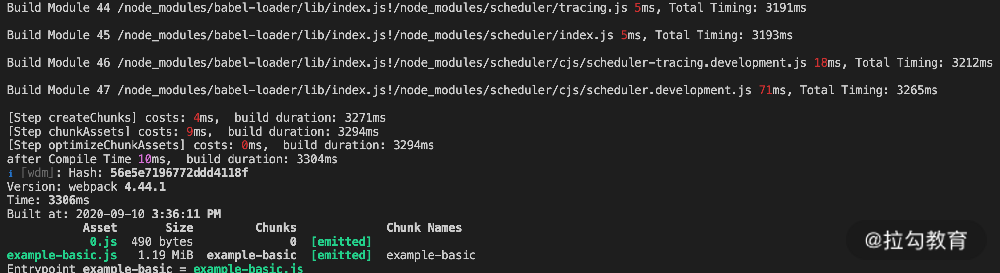
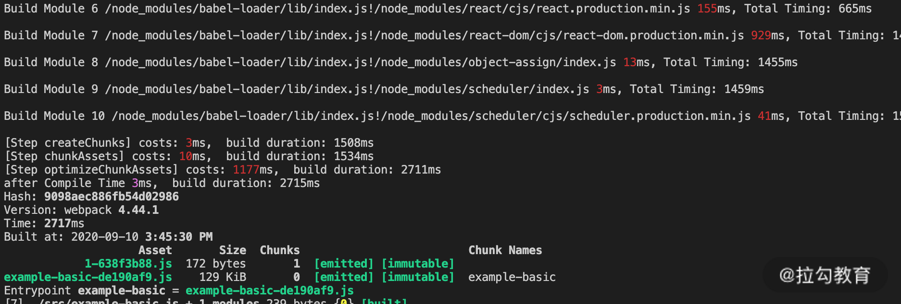
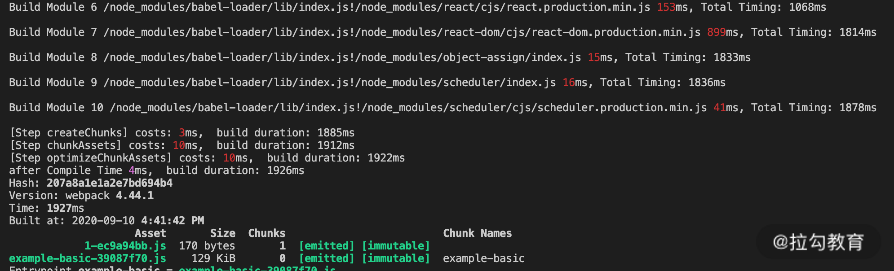
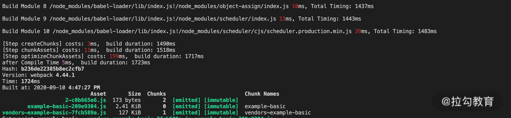

- 00 开篇词 建立上帝视角，全面系统掌握前端效率工程化.md.html
- 01 项目基石：前端脚手架工具探秘.md.html
- 02 界面调试：热更新技术如何开着飞机修引擎？.md.html
- 03 构建提速：如何正确使用 SourceMap？.md.html
- 04 接口调试：Mock 工具如何快速进行接口调试？.md.html
- 05 编码效率：如何提高编写代码的效率？.md.html
- 06 团队工具：如何利用云开发提升团队开发效率？.md.html
- 07 低代码工具：如何用更少的代码实现更灵活的需求.md.html
- 08 无代码工具：如何做到不写代码就能高效交付？.md.html
- 09 构建总览：前端构建工具的演进.md.html
- 10 流程分解：Webpack 的完整构建流程.md.html
- 11 编译提效：如何为 Webpack 编译阶段提速？.md.html
- 12 打包提效：如何为 Webpack 打包阶段提速？.md.html
- 13 缓存优化：那些基于缓存的优化方案.md.html
- 14 增量构建：Webpack 中的增量构建.md.html
- 15 版本特性：Webpack 5 中的优化细节.md.html
- 16 无包构建：盘点那些 No-bundle 的构建方案.md.html
- 17 部署初探：为什么一般不在开发环境下部署代码？.md.html
- 18 工具盘点：掌握那些流行的代码部署工具.md.html
- 19 安装提效：部署流程中的依赖安装效率优化.md.html
- 20 流程优化：部署流程中的构建流程策略优化.md.html
- 21 容器方案：从构建到部署，容器化方案的优势有哪些？.md.html
- 22 案例分析：搭建基本的前端高效部署系统.md.html
- 23 结束语 前端效率工程化的未来展望.md.html
- 捐赠
14 增量构建：Webpack 中的增量构建
开始课程前，我先来解答上一节课的思考题：课程中介绍的几种支持缓存的插件（TerserWebpackPlugin，CSSMinimizerWebpackPlugin）和 Loader（babel-loader，cache-loader）在缓存方面有哪些相同的配置项呢？
通过对比不难发现，这些工具通常至少包含两个配置项：第一项用于指定是否开启缓存，以及指定缓存目录（值为 true 时使用默认目录，指定目录时也表示开启），配置名称通常是 cache 或 cacheDirectory；第二项用于指定缓存标识符的计算参数，通常默认值是一个包含多维度参数的对象，例如这个工具模块的版本号、配置项对象、文件路径和内容等。这个配置项是为了确保缓存使用的安全性，防止当源代码不变但相关构建参数发生变化时对旧缓存的误用。
下面开始本节课的学习。曾经有同事问我一个问题：为什么我只改了一行代码，却需要花 5 分钟才能构建完成？
你可能也有同样的疑问，但经过前面几节关于 Webpack 构建原理和优化的课程后，相信已经可以解答。尽管只改动了一行代码，但是在执行构建时，要完整执行所有模块的编译、优化和生成产物的处理过程，而不是只需要处理所改动的文件。大多数情况下，我们能做的是像前面几节课中讨论的那样，通过各种优化方案提升整体构建的效率。
但是只编译打包所改动的文件真的不能实现吗？这节课我们就来讨论这个话题（课程里完整的示例代码参见 14_incremental_build）。
Webpack 中的增量构建
上述只构建改动文件的处理过程在 Webpack 中是实际存在的，你可能也很熟悉，那就是在开启 devServer的时候，当我们执行 webpack-dev-server 命令后，Webpack 会进行一次初始化的构建，构建完成后启动服务并进入到等待更新的状态。当本地文件有变更时，Webpack 几乎瞬间将变更的文件进行编译，并将编译后的代码内容推送到浏览器端。你会发现，这个文件变更后的处理过程就符合上面所说的只编译打包改动的文件的操作，这就称为“增量构建”。我们通过示例代码进行验证（*npm run dev*），如下面的图片：


可以看到，在开发服务模式下，初次构建编译了 47 个模块，完整的构建时间为 3306ms。当我们改动其中一个源码文件后，日志显示 Webpack 只再次构建了这一个模块，因此再次构建的时间非常短（24ms）。那么为什么在开发服务模式下可以实现增量构建的效果，而在生产环境下不行呢？下面我们来分析影响结果的因素。
增量构建的影响因素
watch 配置
在上面的增量构建过程中，第一个想到的就是需要监控文件的变化。显然，只有得知变更的是哪个文件后，才能进行后续的针对性处理。要实现这一点也很简单，在“第 2 课时|界面调试：热更新技术如何开着飞机修引擎？”中已经介绍过，在 Webpack 中启用 watch 配置即可，此外在使用 devServer 的情况下，该选项会默认开启。那么，如果在生产模式下开启 watch 配置，是不是再次构建时，就会按增量的方式执行呢？我们仍然通过示例验证（*npm run build:watch*），如下面的图片所示：


从结果中可以发现，在生产模式下开启 watch 配置后，相比初次构建，再次构建所编译的模块数量并未减少，即使只改动了一个文件，也仍然会对所有模块进行编译。因此可以得出结论，在生产环境下只开启 watch 配置后的再次构建并不能实现增量构建。
cache 配置
仔细查阅 Webpack 的配置项文档，会在菜单最下方的“其他选项”一栏中找到 cache 选项（需要注意的是我们查阅的是 Webpack 4 版本的文档，Webpack 5 中这一选项会有大的改变，会在下一节课中展开讨论）。这一选项的值有两种类型：布尔值和对象类型。一般情况下默认为false，即不使用缓存，但在开发模式开启 watch 配置的情况下，cache 的默认值变更为true。此外，如果 cache 传值为对象类型，则表示使用该对象来作为缓存对象，这往往用于多个编译器 compiler 的调用情况。
下面我们就来看一下，在生产模式下，如果watch 和 cache 都为 true，结果会如何（npm run build:watch-cache）？如下面的图片所示：


正如我们所期望的，再次构建时，在编译模块阶段只对有变化的文件进行了重新编译，实现了增量编译的效果。
但是美中不足的是，在优化阶段压缩代码时仍然耗费了较多的时间。这一点很容易理解：
体积最大的 react、react-dom 等模块和入口模块打入了同一个 Chunk 中，即使修改的模块是单独分离的 bar.js，但它的产物名称的变化仍然需要反映在入口 Chunk 的 runtime 模块中。因此入口 Chunk 也需要跟着重新压缩而无法复用压缩缓存数据。根据前面几节课的知识点，我们对配置再做一些优化，将 vendor 分离后再来看看效果，如下面的图片所示：


可以看到，通过上面这一系列的配置后（watch + cache），在生产模式下，最终呈现出了我们期望的增量构建效果：有文件发生变化时会自动编译变更的模块，并只对该模块影响到的少量 Chunk 进行优化并更新产物文件版本，而其他产物文件则保持之前的版本。如此，整个构建过程的速度大大提升。
增量构建的实现原理
为什么在配置项中需要同时启用 watch 和 cache 配置才能获得增量构建的效果呢？接下来我们从源码层面分析。
watch 配置的作用
watch 配置的具体逻辑在 Webpack 的 Watching.js 中。查看源码可以看到，在它构建相关的 _go 方法中，执行的依然是 compiler实例的 compile 方法，这一点与普通构建流程并无区别。真正的区别在于，在 watch 模式下，构建完成后并不自动退出，因此构建上下文的对象（包括前一次构建后的缓存数据对象）都可以保留在内存中，并在 rebuild 时重复使用，如下面的代码所示：
lib/Watching.js
...
_go() {
...
this.compiler.hooks.watchRun.callAsync(this.compiler, err => {
const onCompiled = (err, compilation) => {
...
}
this.compiler.compile(onCompiled);
}
}
cache 配置的作用
cache 配置的源码逻辑主要涉及两个文件：CachePlugin.js 和 Compilation.js。其中 CachePlugin.js 的核心作用是将该插件实例的 cache 属性传入 compilation 实例中，如下面的代码所示：
lib/CachePlugin.js
...
compiler.hooks.thisCompilation.tap("CachePlugin", compilation => {
compilation.cache = cache;
...
}
而在 Compilation.js 中，运用 cache 的地方有两处：
- 在编译阶段添加模块时，若命中缓存module，则直接跳过该模块的编译过程（与 cache-loader 等作用于加载器的缓存不同，此处的缓存可直接跳过 Webpack 内置的编译阶段）。
- 在创建 Chunk 产物代码阶段，若命中缓存Chunk，则直接跳过该 Chunk 的产物代码生成过程。
如下面的代码所示：
lib/Compilation.js
...
addModule(module, cacheGroup) {
...
if (this.cache && this.cache[cacheName]) {
const cacheModule = this.cache[cacheName];
...
//缓存模块存在情况下判断是否需要rebuild
rebuild = ...
if (!rebuild) {
...
//无须rebuild情况下返回cacheModule，并标记build:false
return {
module: cacheModule,
issuer: true,
build: false,
dependencies: true
}
}
...
}
if (this.cache) {
this.cache[cacheName] = module;
}
...
//无缓存或需要rebuild情况下返回module，并标记build:true
return {
module: module,
issuer: true,
build: true,
dependencies: true
};
}
...
createChunkAssets() {
...
if ( this.cache && this.cache[cacheName] && this.cache[cacheName].hash === usedHash ) {
source = this.cache[cacheName].source;
} else {
source = fileManifest.render();
...
}
}
以上就是 Webpack 4 中 watch 和 cache 配置的作用原理。通过 Webpack 内置的 cache 插件，将整个构建中相对耗时的两个内部处理环节——编译模块和生成产物，进行缓存的读写处理，从而实现增量构建处理。那么我们是不是就可以在生产环境下直接使用这个方案呢？
生产环境下使用增量构建的阻碍
增量构建之所以快是因为将构建所需的数据（项目文件、node_modules 中的文件数据、历史构建后的缓存数据等）都保留在内存中。在 watch 模式下保留着构建使用的 Node 进程，使得下一次构建时可以直接读取内存中的数据。
而生产环境下的构建通常在集成部署系统中进行。对于管理多项目的构建系统而言，构建过程是任务式的：任务结束后即结束进程并回收系统资源。对于这样的系统而言，增量构建所需的保留进程与长时间占用内存，通常都是不可接受的。
因此，基于内存的缓存数据注定无法运用到生产环境中。要想在生产环境下提升构建速度，首要条件是将缓存写入到文件系统中。只有将文件系统中的缓存数据持久化，才能脱离对保持进程的依赖，你只需要在每次构建时将缓存数据读取到内存中进行处理即可。事实上，这也是上一课时中讲到的那些 Loader 与插件中的缓存数据的存储方式。
遗憾的是，Webpack 4 中的 cache 配置只支持基于内存的缓存，并不支持文件系统的缓存。因此，我们只能通过上节课讲到的一些支持缓存的第三方处理插件将局部的构建环节应用“增量处理”。
不过好消息是 Webpack 5 中正式支持基于文件系统的持久化缓存（Persistent Cache）。我们会在下一课时详细讨论包括这一特性在内的 Webpack 5 中的优化点。
总结
这节课我们主要讨论了构建处理的一种理想情况：增量构建。增量构建在每次执行构建时，只编译处理内容有修改的少量文件，从而极大地提升构建效率。
在 Webpack 4 中，有两个配置项与增量构建相关：watch 和 cache。当我们启用开发服务器时，这两个选项都是默认启用的，因此可以在开发模式下体验到增量构建带来的速度提升。
从内部原理的角度分析，watch 的作用是保留进程，使得初次构建后的数据对象能够在再次构建时复用。而 cache 的作用则体现在构建过程中，在添加模块与生成产物代码时可以利用 cache 对象进行相应阶段结果数据的读写。显然，这种基于内存的缓存方式无法在生产环境下广泛使用。
今天的课后思考题是：在启用增量构建的情况下有时候可能还会遇到 rebuild 很慢的情况，试着分析原因。
© 2019 - 2023 Liangliang Lee. Powered by gin and hexo-theme-book.